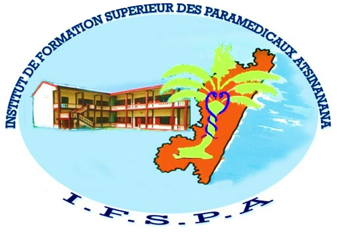

Infirmier(e)s
Formation aux soins infirmiers, alternant enseignements théoriques et stages en milieu de soins.
Liseré bleu · matricule IF
Établissement supérieur privé de Toamasina, autorisé depuis 2011 et habilité dans le domaine « Science de la Santé ».
Chaque filière se reconnaît à sa couleur. Les galons de l'épaulette indiquent l'année d'études, de la première année jusqu'au diplôme.
Formation aux soins infirmiers, alternant enseignements théoriques et stages en milieu de soins.
Liseré bleu · matricule IFFormation à l'accompagnement de la grossesse, de l'accouchement et du nouveau-né, avec stages en maternité.
Liseré rose · matricule SFDate de la dernière attestation de renouvellement de l'établissement.
Autorisation d'ouverture de l'établissement supérieur privé IFSPA.
Habilitation de la formation dispensée, domaine « Science de la Santé ».
Équivalence administrative du titre dans la Fonction publique.
Attestation de renouvellement du 3 avril 2024.